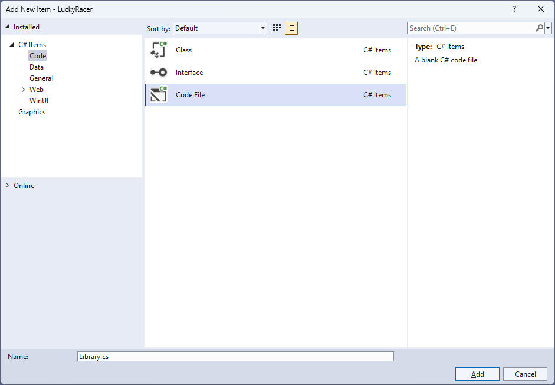
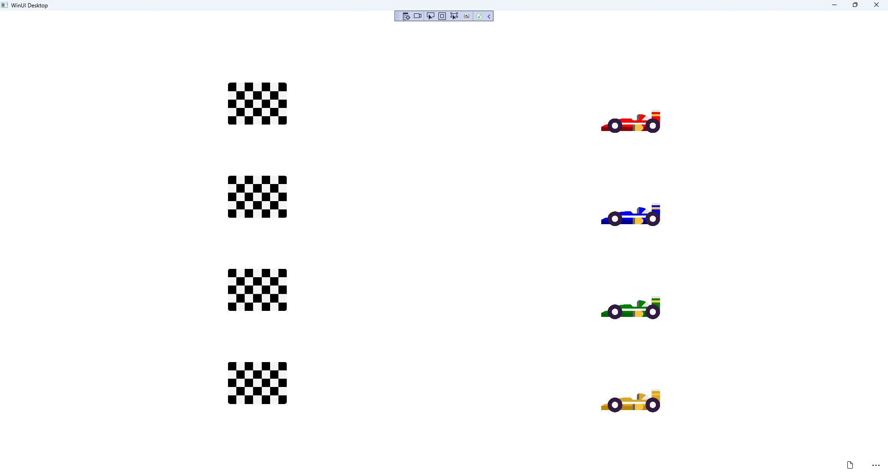

Lucky Racer
Learn creating a Lucky Racer game using Windows App SDK with this Tutorial
Lucky Racer shows how you can create a game where you can pick from a selection of cars to see if you will be the winner in the quickest time using emoji and a toolkit from NuGet using the Windows App SDK.
Step 1
Follow Setup and Start on how to get Setup and Install what you need for Visual Studio 2022 and Windows App SDK.


Step 2
Then in Visual Studio within Solution Explorer for the Solution, right click on the Project shown below the Solution and then select Manage NuGet Packages...

Step 3
Then in the NuGet Package Manager from the Browse tab search for Comentsys.Toolkit.WindowsAppSdk and then select Comentsys.Toolkit.WindowsAppSdk by Comentsys as indicated and select Install

This will add the package for Comentsys.Toolkit.WindowsAppSdk to your Project. If you get the Preview Changes screen saying Visual Studio is about to make changes to this solution. Click OK to proceed with the changes listed below. You can read the message and then select OK to Install the package.
Step 4
Then while still in the NuGet Package Manager from the Browse tab search for Comentsys.Assets.FluentEmoji and then select Comentsys.Assets.FluentEmoji by Comentsys as indicated and select Install

This will add the package for Comentsys.Assets.FluentEmoji to your Project. If you get the Preview Changes screen saying Visual Studio is about to make changes to this solution. Click OK to proceed with the changes listed below. You can read the message and then select OK to Install the package, then you can close the tab for Nuget: LuckyRacer by selecting the x next to it.
Step 5
Then in Visual Studio within Solution Explorer for the Solution, right click on the Project shown below the Solution and then select Add then New Item…

Step 6
Then in Add New Item from the C# Items list, select Code and then select Code File from the list next to this, then type in the name of Library.cs and then Click on Add.

Step 7
You will now be in the View for the Code of Library.cs to define a namespace allowing classes to be defined together,
usually each is separate but will be defined in Library.cs by typing the following Code along with using for Comentsys.Toolkit.WindowsAppSdk
and others plus an enum for State and Class for Racer.
using Comentsys.Assets.FluentEmoji;
using Comentsys.Toolkit.WindowsAppSdk;
using Microsoft.UI;
using Microsoft.UI.Xaml.Controls;
using Microsoft.UI.Xaml.Input;
using Microsoft.UI.Xaml.Media;
using Microsoft.UI.Xaml.Media.Animation;
using System;
using System.Collections.Generic;
using System.Linq;
using System.Threading.Tasks;
using Windows.UI;
namespace LuckyRacer;
public enum State
{
Select, Ready, Started, Finished
}
public class Racer
{
public int Index { get; set; }
public TimeSpan Time { get; set; }
public Racer(int index) =>
Index = index;
public Racer(int index, TimeSpan time) =>
(Index, Time) = (index, time);
}
public class Library
{
// Constants, Variables & Choose Method
// Get Finish, Get Racer, Set Sources & Get Image
// Content, Move & Start
// Finish & Progress
// Race, Ready & Select
// Add Racer & Add Finish
// Layout & New
}
Step 8
While still in the namespace of LuckyRacer in Library.cs and in the class of Library after the
Comment of // Constants, Variables & Choose Method type the following Constants, Variables and Method:
private const string title = "Lucky Racer";
private const int image_size = 72;
private const int size = 400;
private readonly Random _random = new((int)DateTime.UtcNow.Ticks);
private Dialog _dialog;
private Grid _grid;
private bool _finish;
private int _count;
private State _state;
private Racer _winner;
private Racer _select;
private List<Image> _images;
private ImageSource[] _sources;
private List<int> Choose(int minimum, int maximum, int total)
{
var choose = new List<int>();
var values = Enumerable.Range(minimum, maximum).ToList();
for (int index = 0; index < total; index++)
{
var value = _random.Next(0, values.Count);
choose.Add(values[value]);
}
return choose;
}
Constants are values that are used in the game that will not change and Variables are used to store various values,
Instances of Racer and images needed for the game.
There is also a Method of Choose which is used to select randomised numbers which can be duplicated so the race is more even and fair.
Step 9
While still in the namespace of LuckyRacer in Library.cs and in the class of Library after the
Comment of // Get Finish, Get Racer, Set Sources & Get Image type the following Methods:
private async Task<ImageSource> GetFinishAsync() =>
await FlatFluentEmoji.Get(FluentEmojiType.ChequeredFlag)
.AsImageSourceAsync();
private async Task<ImageSource> GetRacerAsync(Color main, Color trim) =>
await FlatFluentEmoji.Get(FluentEmojiType.RacingCar,
new[]
{
Color.FromArgb(255, 248, 49, 47).AsDrawingColor(),
Color.FromArgb(255, 202, 11, 74).AsDrawingColor()
},
new[]
{
main.AsDrawingColor(),
trim.AsDrawingColor()
}).AsImageSourceAsync();
private async Task SetSourcesAsync() =>
_sources ??= (new ImageSource[]
{
await GetFinishAsync(),
await GetRacerAsync(Colors.Red, Colors.DarkRed),
await GetRacerAsync(Colors.Blue, Colors.DarkBlue),
await GetRacerAsync(Colors.Green, Colors.DarkGreen),
await GetRacerAsync(Colors.Goldenrod, Colors.DarkGoldenrod)
});
private Image GetImage(ImageSource source) =>
new()
{
Height = image_size,
Width = image_size,
Source = source
};
GetFinishAsync will return a Chequered Flag emoji to represent the finish line for the racers and GetRacerAsync will return the image for
the racers using the Racing Car emoji and will customise it using different colours and these Methods will be both used by SetSourcesAsync
to set the images used in the game and GetImage will return an Image with a given ImageSource.
Step 10
While still in the namespace of LuckyRacer in Library.cs and in the class of Library after the
Comment of // Content, Move & Start type the following Methods:
private StackPanel Content(string text, int index)
{
var panel = new StackPanel()
{
Orientation = Orientation.Vertical,
};
panel.Children.Add(new TextBlock()
{
Text = text
});
panel.Children.Add(GetImage(_sources[index]));
return panel;
}
private void Move(Image image, double from, double to, TimeSpan duration)
{
var animation = new DoubleAnimation()
{
To = to,
From = from,
Duration = duration,
EasingFunction = new ExponentialEase()
{
EasingMode = EasingMode.EaseIn
}
};
var storyboard = new Storyboard();
Storyboard.SetTargetProperty(animation, "(Canvas.Left)");
Storyboard.SetTarget(animation, image);
storyboard.Completed += (object sender, object e) =>
Progress(sender as Storyboard);
storyboard.Children.Add(animation);
storyboard.Begin();
}
private void Start()
{
_count = 0;
_finish = false;
_state = State.Select;
}
Content will return a StackPanel containing a TextBlock as well as an image using GetImage, Move will be used to display the progress of the race,
which will use a Method for Progress which will be defined in the next Step and Start will be ready for the game to start.
Step 11
While still in the namespace of LuckyRacer in Library.cs and in the class of Library after the
Comment of // Finish & Progress type the following Methods:
private async void Finish()
{
if (_state == State.Finished)
{
var message = _select.Index == _winner.Index ?
$"You Won in {_winner.Time}!" :
$"You Lost! Winning Car";
var content = Content(message, _winner.Index);
await _dialog.ConfirmAsync(content);
if (_finish)
{
foreach (var image in _images)
{
Move(image, 0, size - image_size,
TimeSpan.FromSeconds(1));
}
_finish = false;
}
Start();
}
}
private void Progress(Storyboard storyboard)
{
if (_state == State.Started)
{
var duration = storyboard.GetCurrentTime();
var racer = _images.First(w => (w.Tag as Racer)
.Time == duration).Tag as Racer;
_count++;
if (_count == 1)
_winner = new Racer(racer.Index, duration);
if (_count == _images.Count)
{
_state = State.Finished;
Finish();
}
_finish = true;
}
}
Finish will handle what happens when the race is over and determine if the Racer that was selected was the winning one or not and
Progress which was called in Move will be used to set how the Racer should move across the game.
Step 12
While still in the namespace of LuckyRacer in Library.cs and in the class of Library after the
Comment of // Race, Ready & Select type the following Methods:
private void Race()
{
if (_state == State.Ready)
{
var index = 0;
var times = Choose(5, 15, _sources.Length - 1);
foreach (var image in _images)
{
var racer = image.Tag as Racer;
racer.Time = TimeSpan.FromSeconds(times[index]);
Move(image, size - image_size, 0, racer.Time);
index++;
}
_state = State.Started;
}
}
private async void Ready()
{
if (_state == State.Ready)
{
var content = Content("Selected to Win", _select.Index);
var result = await _dialog.ConfirmAsync(
content, "Race", "Cancel");
if (result)
Race();
else
_state = State.Select;
}
}
private void Select(Image image)
{
if (_state == State.Select)
{
var racer = image.Tag as Racer;
_select = racer;
_state = State.Ready;
}
Ready();
}
Race will determine which Racer will win and will then set each Racer so that the time it takes to move along the game matches the time that has been selected,
Ready will give the player the option of which Racer they think will win and once selected it will begin the race and Select will be used to set which Racer has been selected.
Step 13
While still in the namespace of LuckyRacer in Library.cs and in the class of Library after the
Comment of // Add Racer & Add Finish type the following Methods:
private void AddRacer(Grid grid, int row)
{
grid.RowDefinitions.Add(new RowDefinition());
var racer = GetImage(_sources[row]);
racer.Tag = new Racer(row);
racer.Tapped += (object sender, TappedRoutedEventArgs e) =>
Select(sender as Image);
Canvas.SetLeft(racer, size - image_size);
_images.Add(racer);
var canvas = new Canvas()
{
Height = image_size,
Width = size
};
canvas.Children.Add(racer);
Grid.SetRow(canvas, row - 1);
grid.Children.Add(canvas);
}
private void AddFinish(Grid grid, int row)
{
grid.RowDefinitions.Add(new RowDefinition());
var finish = GetImage(_sources.First());
Grid.SetRow(finish, row - 1);
grid.Children.Add(finish);
}
AddRacer is used to add the racers to the game and will use GetImage to obtain the Image to be used where each one will be a different colour then
will add this to each Row of the Grid up to the number of racers in the game and AddFinish will be used to get the image that will be used to
indicate the finish line for the race in the game.
Step 14
While still in the namespace of LuckyRacer in Library.cs and in the class of Library after the
Comment of // Layout & New type the following Methods:
private void Layout(Grid grid)
{
_images = new();
grid.Children.Clear();
var panel = new StackPanel()
{
Orientation = Orientation.Horizontal
};
_grid = new Grid()
{
Height = size,
Width = size
};
var finish = new Grid();
for (int row = 1; row < _sources.Length; row++)
{
AddRacer(_grid, row);
AddFinish(finish, row);
}
panel.Children.Add(finish);
panel.Children.Add(_grid);
grid.Children.Add(panel);
}
public async void New(Grid grid)
{
_dialog = new Dialog(grid.XamlRoot, title);
await SetSourcesAsync();
Layout(grid);
Start();
}
Layout will create the look-and-feel of the game by setting up all the elements including the racers and the finish line and
New will setup and start a new game and will also setup the images used in the game.
Step 15
Step 16
In the XAML for MainWindow.xaml there will be some XAML for a StackPanel, this should be Removed:
<StackPanel Orientation="Horizontal"
HorizontalAlignment="Center" VerticalAlignment="Center">
<Button x:Name="myButton" Click="myButton_Click">Click Me</Button>
</StackPanel>
Step 17
While still in the XAML for MainWindow.xaml above </Window>, type in the following XAML:
<Grid>
<Viewbox>
<Grid Margin="50" Name="Display"
HorizontalAlignment="Center"
VerticalAlignment="Center" Loaded="New"/>
</Viewbox>
<CommandBar VerticalAlignment="Bottom">
<AppBarButton Icon="Page2" Label="New" Click="New"/>
</CommandBar>
</Grid>
This XAML contains a Grid with a Viewbox which will Scale a Grid.
It has a Loaded event handler for New which is also shared by the AppBarButton.
Step 18
Step 19
In the Code for MainWindow.xaml.cs there be a Method of myButton_Click(...) this should be Removed by removing the following:
private void myButton_Click(object sender, RoutedEventArgs e)
{
myButton.Content = "Clicked";
}
Step 20
Once myButton_Click(...) has been removed, within the Constructor of public MainWindow() { ... } and below the line of this.InitializeComponent(); type in the following Code:
private readonly Library _library = new();
private void New(object sender, RoutedEventArgs e) =>
_library.New(Display);
Here an Instance of Library is created then below this is the Method of New that will be used with Event Handler
from the XAML, this Method uses Arrow Syntax with the => for an expression body which is useful when a Method only has one line.
Step 21
Step 22
Once running you can tap on any Racer and then tap Race to begin racing and you can watch and see which one wins, the one that reaches the Finish first will be the winner and if this is your Racer then you win, if not you lose or select New to start a new game.

Step 23